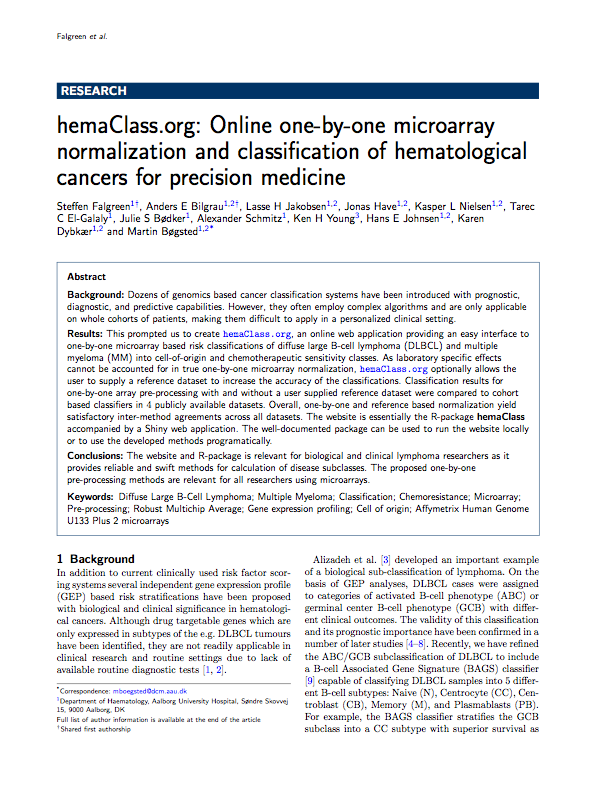
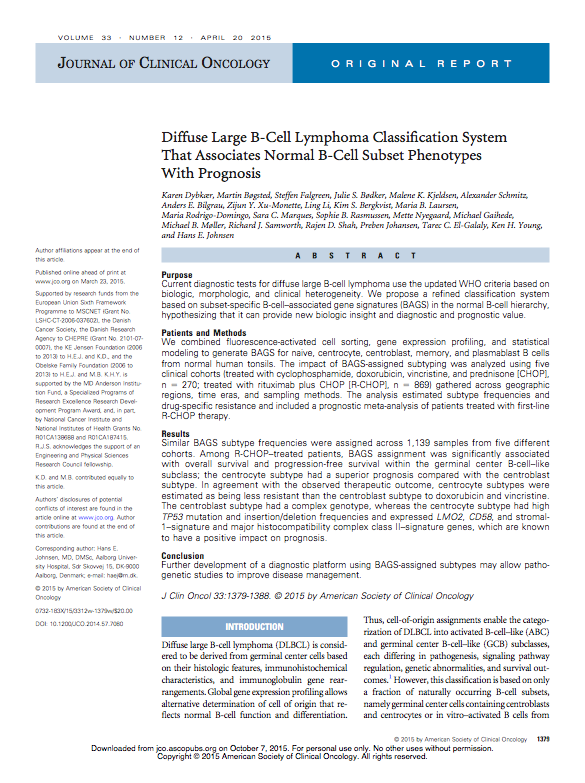
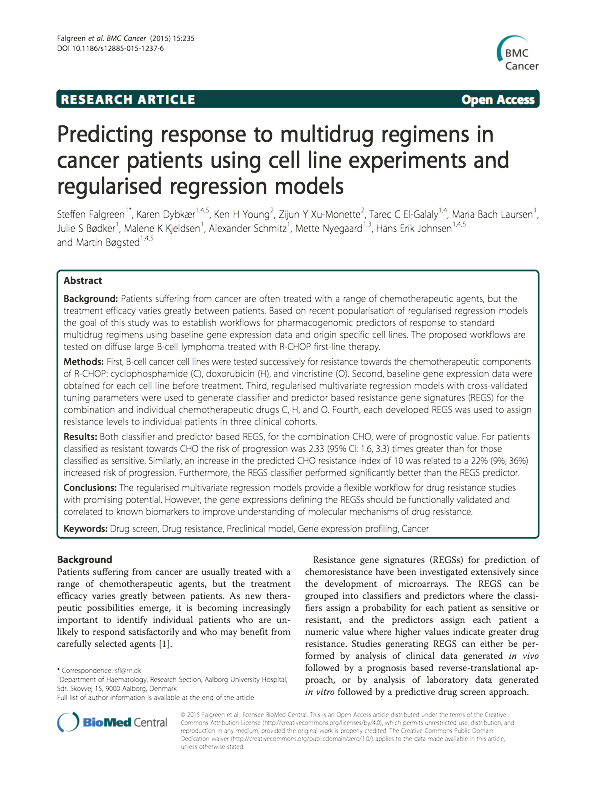
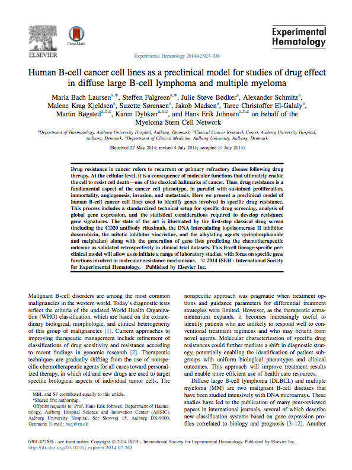
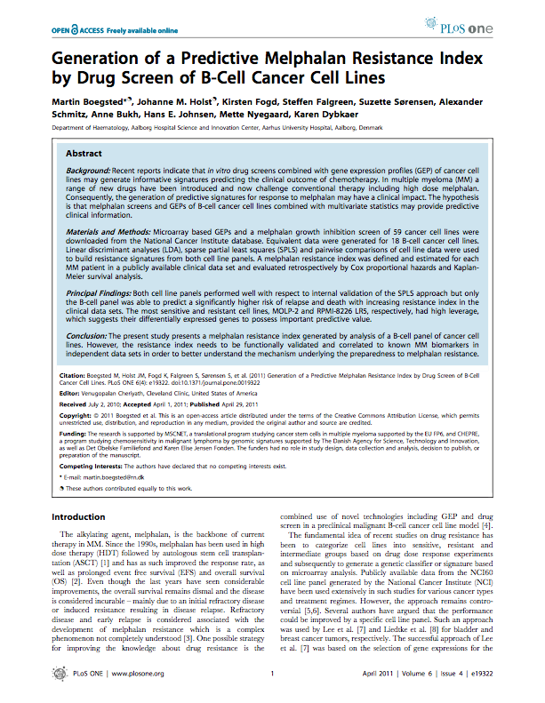

These are papers which have relevance to hemaClass and the classification and normalization schemes available.
|  |
hemaClass.org: Online one-by-one microarray normalization and classification of haematological cancers for precision medicine
Steffen Falgreen, Anders Ellern Bilgrau, Rasmus Froberg Brøndum, Lasse Hjorth Jakobsen,
Jonas Have, Kasper Lindblad Nielsen, Tarec Christoffer El-Galaly,
Julie Støve Bødker, Alexander Schmitz, Hans Erik Johnsen,
Karen Dybkær, and Martin Bøgsted
|
|  |
A diffuse large B-cell lymphoma classification system that associates normal B-cell subset phenotypes with prognosis
*Karen Dybkær, *Martin Bøgsted, Steffen Falgreen, Julie S. Bødker,
Malene K. Kjeldsen, Alexander Schmitz, Anders E. Bilgrau, Zijun Y.
Xu-Monette, Ling Li, Kim S. Bergkvist, Maria B. Laursen, Maria
Rodrigo-Domingo, Sara C. Marques, Sophie B. Rasmussen, Mette Nyegaard,
Michael Gaihede, Michael B. Møller, Richard J. Samworth, Rajen D. Shah,
Preben Johansen, Tarec C. El-Galaly, Ken H. Young, and Hans E. Johnsen
*Shared first authorship
|
|  |
Predicting response to multidrug regimens in cancer patients using cell line experiments and regularised regression models
Steffen Falgreen, Karen Dybkær, Ken H. Young, Zijun Y. Xu-Monette, Tarec
C. El-Galaly, Maria Bach Laursen, Julie S. Bødker, Malene K. Kjeldsen,
Alexander Schmitz, Mette Nyegaard, Hans Erik Johnsen, and Martin Bøgsted
|
|  |
Human B-cell cancer cell lines as a preclinical model for studies of drug effect in diffuse large B-cell lymphoma and multiple myeloma
Maria Bach Laursen, Steffen Falgreen, Julie Støve Bødker, Alexander
Schmitz, Malene Krag Kjeldsen, Suzette Sørensen, Jakob Madsen, Tarec
Christoffer El-Galaly, Martin Bøgsted, Karen Dybkær, Hans Erik Johnsen
|
|  |
Generation of a Predictive Melphalan Resistance Index by Drug Screen of B-Cell Cancer Cell Lines
Martin Boegsted, Johanne M. Holst, Kirsten Fogd, Steffen Falgreen,
Suzette Sørensen, Alexander Schmitz, Anne Bukh, Hans E. Johnsen, Mette
Nyegaard, Karen Dybkaer
|